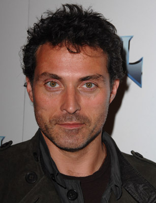
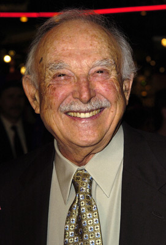
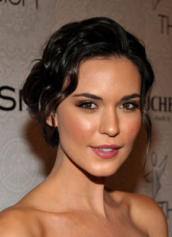
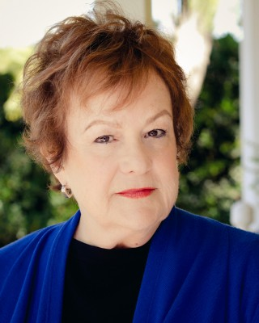
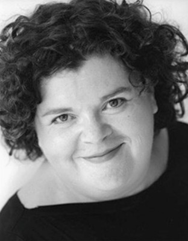
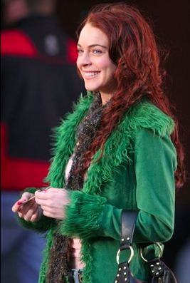

#5311 Liebe braucht keine Ferien
Alternativ: The Holiday

 IMDB-Wertung: 6.9 / 10
IMDB-Wertung: 6.9 / 10  Metascore: 0
Metascore: 0 
Sitzengelassen, Enttäuscht, Hintergangen. Das dürfte auf den ersten Blick wohl alles sein, was die urbane Medienfrau Amanda aus Los Angeles und die Londoner Journalistin Iris aus der englischen Provinz verbindet. Dennoch bringt sie die Suche nach absolut männerfreien Weihnachtsfeiertagen und zwei Wochen Erholung für den emotionalen Haushalt zusammen und auf die gleiche Lösung: ein Wohnungstausch auf Zeit. Sie tauschen die Seiten des Atlantiks, Häuser, Autos und irgendwie ihr Leben. Nur damit, dass der Tapetenwechsel auch für eine neue Liebe sorgt, hätten sie nie gerechnet. Neben der Begegnung mit regionalen Gepflogenheiten wartet so in England der unwiderstehliche Charme Grahams auf Amanda während Iris in Amerika von Miles' herzlichem Ungestüm verführt wird.
Jahr: 2006
Dauer: 135 Minuten
FSK: 0
Land: USA Studio: Universal PicturesTonspuren: DTS - ,
Untertitel: Deutsch, Englisch, Französisch, , , , ,
Auflösung: 1080p (1920x1040) Größe: 11059 MB
Genre: Komödie, Liebe
Regisseur:  Nancy Meyers
Nancy Meyers
Drehbuch: Harry Kleiner
Soundtrack:
Darsteller:
 Cameron Diaz als Amanda
Cameron Diaz als Amanda Kate Winslet als Iris
Kate Winslet als Iris Jude Law als Graham
Jude Law als Graham Jack Black als Miles
Jack Black als Miles Eli Wallach als Arthur
Eli Wallach als Arthur Edward Burns als Ethan
Edward Burns als Ethan-  Rufus Sewell als Jasper
- Sarah Parish als Hannah
 Shannyn Sossamon als Maggie
Shannyn Sossamon als Maggie-  Bill Macy als Ernie
- Shelley Berman als Norman
 Kathryn Hahn als Bristol
Kathryn Hahn als Bristol John Krasinski als Ben
John Krasinski als Ben Alex O'Loughlin als Kissing Couple
Alex O'Loughlin als Kissing Couple-  Odette Annable als Kissing Couple
- Terry Diab als Night Editor
- Hope Riley als Sarah Smith-Alcott
- Steven Bruns als Couple on Plane
- Nikki Novak als Couple on Plane
- Judith Drake als Woman on Plane
-  Pamela Dunlap als Woman on Plane
-  Sarah Flind als Market Clerk
- Darline Harris als Arthur's Nurse
- Lydia Blanco Garza als Marta
- Jon Prescott als Maggie's Boyfriend
- Patrick Cavanaugh als Young Man at WGA
- Justin Collins als Young Man at WGA
 Lasco Atkins als Embankment Pedestrian , uncredited
Lasco Atkins als Embankment Pedestrian , uncredited- MarLee Candell als Writers' Guild Member , uncredited
- Freddie De Grate als Coach Passenger , uncredited
- Nicholas Downs als Peter , uncredited
- Amber Elizabeth als Shop Customer , uncredited
 James Franco als Himself , uncredited
James Franco als Himself , uncredited- Andy Gates als Man on Tube , uncredited
- Jake Head als Mixer , uncredited
- Halbert Hernandez als Man in resturant , uncredited
 Dustin Hoffman als Dustin Hoffman , uncredited
Dustin Hoffman als Dustin Hoffman , uncredited- Dani Lennon als Model , uncredited
-  Lindsay Lohan als Herself , uncredited
- Jamie McCall als Party Guest , uncredited
- Mark A. Nash als Newsroom , uncredited
 Vanessa Ross als Lindsay Lohan's Friend , uncredited
Vanessa Ross als Lindsay Lohan's Friend , uncredited- David Venafro als Usher , uncredited
- Miffy Englefield als Sophie
- Emma Pritchard als Olivia
- Bundle Williams als Girl in Pub
- Suzanne Dizon als Newspaper Party Guest
- Kenneth Danziger als Editor
- Gilbert Esquivel als Gardener
- Hal Douglas als Movie Trailer Narrator
Datei: X:\2006(G-M)\Liebe braucht keine Ferien (2006, FSK0, 1920x1040).mkv seit 12.01.2017
Festplatte: HD 2005(G-Z)-2006(A-Z)
 Es gibt insgesamt 48 Filme in der Gruppe '2006(G-M)'
Es gibt insgesamt 48 Filme in der Gruppe '2006(G-M)'